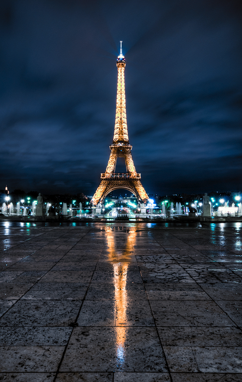
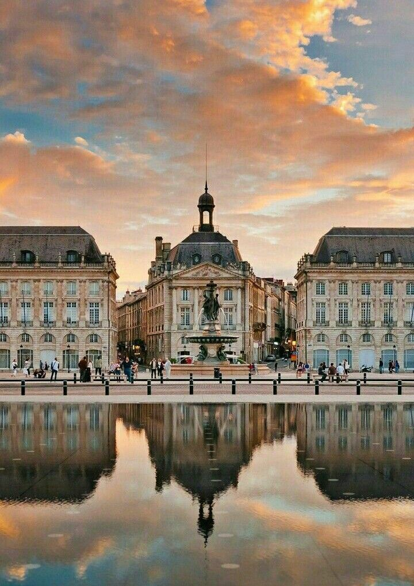
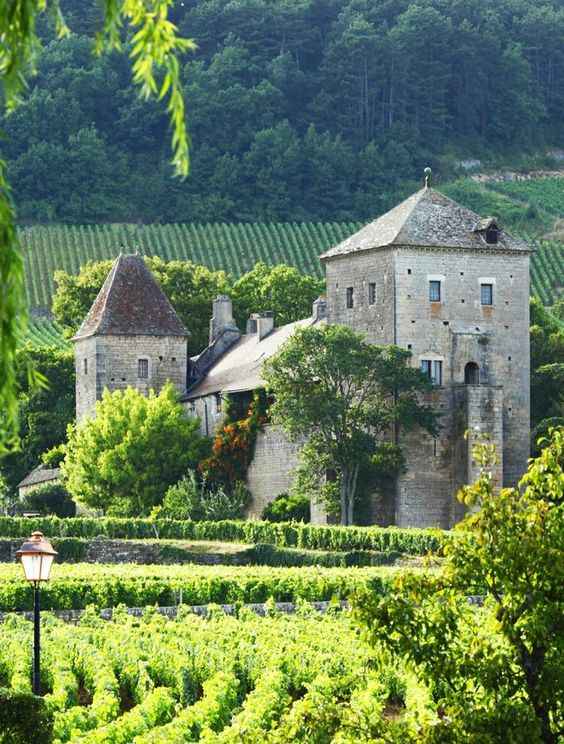
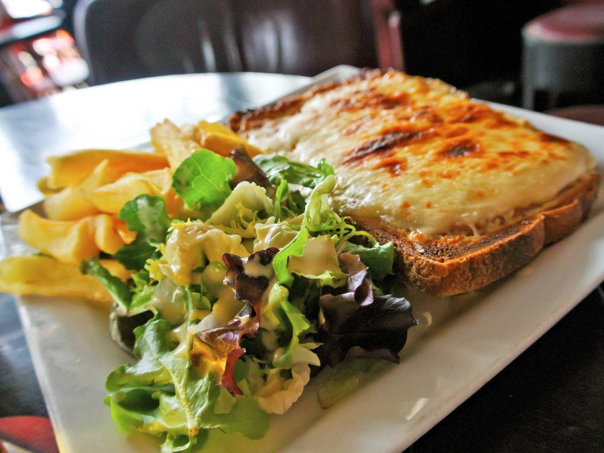
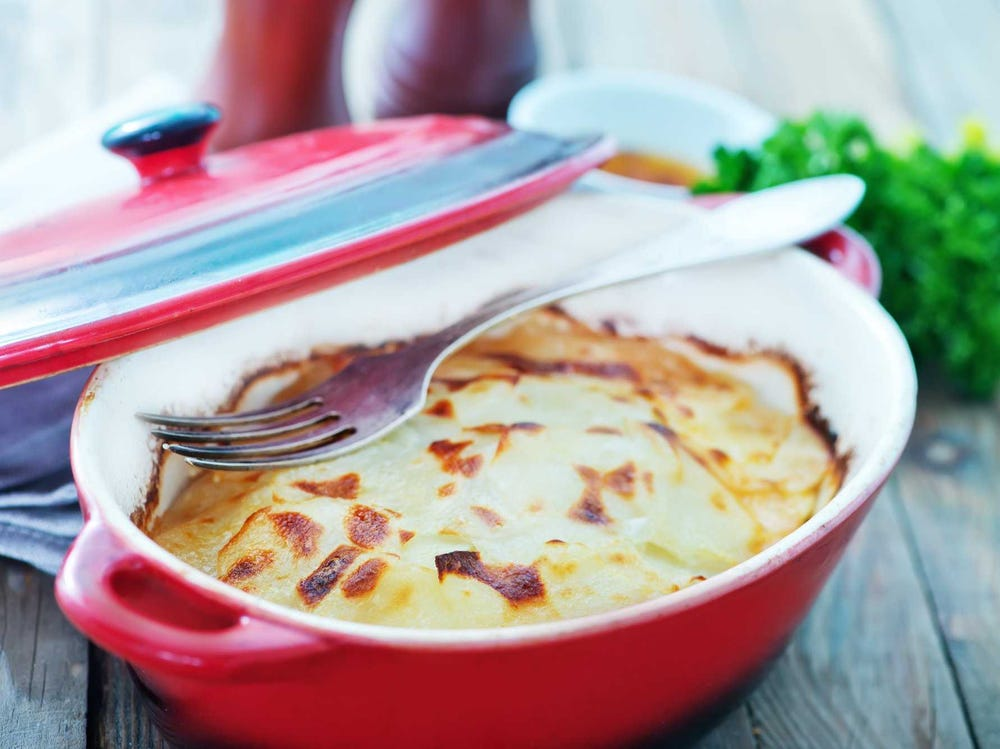

France seduces travellers with its unfalteringly familiar culture, woven around cafe terraces,
village-square markets and lace-curtained bistros with their plat du jour (dish of the day) chalked on the board.
France is about world-class art and architecture. It seduces with iconic landmarks known the world over and rising stars yet to be
discovered. This country's cultural repertoire is staggering - in volume and diversity. And this is where the beauty of la belle
France lies: when superstars such as Mademoiselle Eiffel, royal Versailles and the celebrity-ridden French Riviera have been
ticked off, there's ample more to thrill. France is, after all, the world's top tourism destination with some 89 million
visitors each year who flock to the land of the Gauls to feast on its extraordinary wealth of museums, galleries, ateliers
(artist workshops) and hands-on cultural experiences.
Places to Go
Paris
Paris' monument-lined boulevards, museums, classical bistros and boutiques are enhanced by a new wave
of multimedia galleries, creative wine bars, design shops and tech start-ups.
The cloud-piercing, wrought-iron Eiffel Tower, broad Arc de Triomphe guarding the glamorous avenue des Champs-Elysees, flying
buttressed Notre Dame cathedral, lamplit bridges spanning the Seine and art nouveau cafes' wicker-chair-lined terraces are
enduring Parisian emblems. Despite initial appearances, however, Paris' cityscape isn't static: there are some stunning modern
and contemporary icons, too, from the inside-out, industrial-style Centre Pompidou to the mur vegetal (vertical garden) gracing
the Musee du Quai Branly, the glass sails of the Fondation Louis Vuitton contemporary-art centre, and the gleaming steel
egg-shaped concert venue La Seine Musicale.
Artistic Treasures
With an illustrious artistic pedigree - Renoir, Rodin, Picasso, Monet, Manet, Dali and Van Gogh are but a few of the masters who have lived and worked here over the years - Paris is one of the world's great art repositories, harbouring treasures from antiquity onwards. In addition to big hitters like the incomparable Louvre, the Musee d'Orsay's exceptional impressionist collection, and the Centre Pompidou's cache of modern and contemporary art, scores of smaller museums showcase every imaginable genre, a diverse range of venues mount major exhibitions through to offbeat installations, and there's also the city's vibrant street art.
Bordeaux
An intoxicating cocktail of 18th-century savoir-faire, millennial hi-tech and urban street life,
France's sixth largest city is among Europe's most exciting and gutsy players.
This is the world's largest urban World Heritage Site, cradling half the city (18 sq km) in its Unesco-listed treasure chest.
From the elegant symmetry of place de la Bourse, palaces strung with stone-sculpted mascarons (faces), to tree-shaded boulevards
laced with hôtels particuliers (mansions) built for 18th-century wine merchants, Bordeaux architecture is world-class.
Contemporary architects continue the trend for excellence, with breathtakingly wild and beautiful creations resembling giant
wine decanters, gleaming white pebbles, all sorts. An interesting portfolio of art museums embracing all periods and genres
is the icing on the cake to this magnificent architectural heritage.

Gastronomy & Fine Wine
This is a wine capital hemmed in by green, sun-drenched vineyards. Viticulture here is an ancient art and tradition bearing its own unique trademarks and no other vineyards in the world produce as much fine wine. Best up, from celebrated premiers crus aged for years to the very first vin nouveau cracked open at festivals after the autumnal harvest, degustation (tasting) is an intrinsic part of daily life. Paired with the city's exceptional dining scene - a sassy mix of traditional French kitchens, experimental neobistros, creative fusion restaurants, food trucks and barista-run coffee shops - there is no tastier marriage. Sante!
Bordelais Art de Vivre
It's hard to believe that this was a city that fell under British rule for three hundred years (from the coronation of Henry of Aquitaine as King Henry II of England in 1152). Staunchly Bordelais to the last breath, Bordeaux enjoys an overwhelming sense of local pride and savoir faire. Innovation is her middle name and a high-spirited, university-student population bolsters the compelling undercurrent of creativity rippling through the city. Peppering a tramline with monumental pieces of contemporary art, partying in a WWII submarine bunker, and dancing on a barge at the industrial wet docks is all second nature to this natural bon vivant.
Famous Food
Croque monsieur
Although it seems like nothing more than a simple sandwich, the buttery, cheesy taste of a croque monsieur is deliciously unique. Chefs stack ham, Gruyere cheese, and mustard between two thick pieces of buttered toast; the addition of an egg on top transforms the dish into a croque madame.
Gratin Dauphinois
Also hailing from the south of France, gratin dauphinois is a made of sliced potatoes baked in milk and cream. The classic French comfort food often comes topped with garlic, shallots, and a bit of cheese.